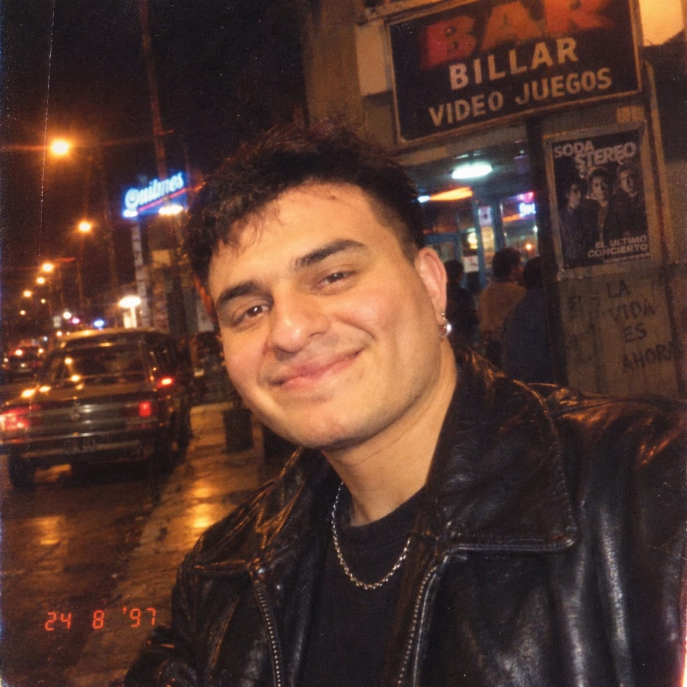

G33
FRONTEND
FRONTEND
INTEGRANTE 01 · GRUPO 33
Jonatan Emanuel Uribio
Me interesa crear experiencias digitales útiles, combinar diseño y tecnología, y seguir creciendo como desarrollador. Mi objetivo es avanzar en el desarrollo de software y construir soluciones que aporten valor.
EDAD29 años
UBICACIÓNYerba Buena, Tucumán
Habilidades e intereses
- UX/UI
- HTML y CSS
- JavaScript
- React
- MongoDB
- Desarrollo backend
Películas favoritas
- Trilogía de Batman — Christopher Nolan
- Avengers
- Matrix
Discos / música
- Soda Stereo
- Michael Jackson
- Hans Zimmer — bandas sonoras
UN TOQUE PERSONAL
Desafío de desarrollo
Generá una consigna breve para poner en práctica el pensamiento de programación.
La interacción aparecerá aquí.